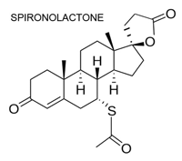

Тиазидные диуретики и спиронолактон сохраняют своё место в терапии артериальной гипертензии и сердечной недостаточности. В то же время у спиронолактона также выявлены мощные антиандрогенные свойства, а в комбинации с метформином он успешно используется при лечении поликистоза яичников.
Тиазидные диуретики
Первые диуретики представляли собой препараты растительного происхождения, использовавшиеся, по меньшей мере, начиная с XVI века, когда они являлись основными лекарственными средствами для лечения отёков, называемых «водянкой». Первыми веществами с мочегонными свойствами были ртутьорганические соединения, на смену которым в середине 40-х гг. прошлого века пришла карбоангидраза. К 1960 г. тиазидный диуретик гидрохлоротиазид и тиазидоподобный диуретик хлорталидон были одобрены для применения, и ещё в 1959 г. Американская ассоциация сердца (American Heart Association) и Национальные институты здравоохранения сообщили о снижении уровня смертности, которое, по их мнению, частично было связано с использованием новых тиазидных гипотензивных препаратов. Они до сих пор обладают существенной ценностью для лечения гипертензии. Несмотря на то, что превосходство хлорталидона над гидрохлоротиазидом, по большей части, доказано, остаётся несколько спорных вопросов. Тиазидные диуретики часто рекомендуются в качестве терапии первой линии для лечения артериальной гипертензии при отсутствии других сопутствующих заболеваний.
Спиронолактон

Спиронолактон — слабое мочегонное средство и антагонист альдостерона — был впервые использован в клинической практике в 1959 г. Он уже давно применяется в качестве дополнительной терапии для контроля артериального давления, при этом доказана его эффективность для лечения резистентной артериальной гипертензии у некоторых пациентов. Он занимает важное место в лечении больных с сердечной недостаточностью, а в последних руководствах он рекомендуется для пациентов с сердечной недостаточностью II-IV ФК по NYHA. В качестве мочегонного средства, спиронолактон часто используется в комбинации с фуросемидом для лечения отёков/асцита, вызванного циррозом печени. Мощные антиандрогенные свойства делают его полезным для лечения облысения по мужскому типу и гирсутизма, алопеции, а также акне у женщин. В настоящее время известно, что спиронолактон является эффективным препаратом для лечения поликистоза яичников в комбинации с метформином. Эплеренон, новый антагонист альдостерона, наряду с другими структурно родственными препаратами, со временем может вытеснить спиронолактон. Однако до настоящего времени не проводилось прямых сравнительных исследований, к тому же спиронолактон является недорогим препаратом, что позволяет ему оставаться стандартом для данного класса.
Old Drugs That Are Still Good Drugs
Medscape